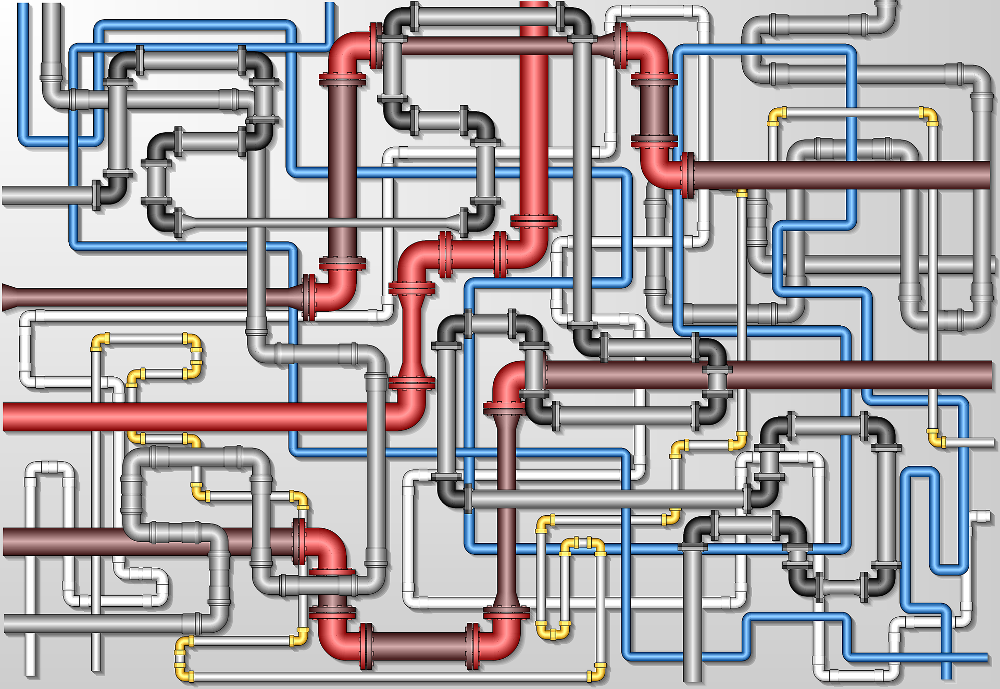

Digital Scholarly Editions and TEI
RISE Crash course
1.04.2022, Unibas
Elena Spadini
Presentation online at: https://elespdn.github.io/talks/20220401_editions_crashCourse/index.html
Table of contents
- Scholarly Digital Editions
- Produce editions
- Reuse editions
- Conclusions
1.
Scholarly Digital Editions
Scholarly edition
A scholarly edition aims to establish a reliable text, following explicit principles. It gives an account of the circumstances of the creation of the work and of its transmission and/or its genesis, and. A scholarly edition usually offers notes, introductions, and other materials to provide relevant information for the reader.


Patrick Sahle, Digitale Editionsformen, Zum Umgang mit der Überlieferung unter den Bedingungen des Medienwandels, 3 Bände, Norderstedt: Books on Demand 2013
Digital scholarly editions are not just scholarly editions in digital media: digital ≠ digitized
"Wiedergabe ohne Erschließung ist keine Edition. Eine bloße Reproduktion, ein einfaches Faksimile, eine digitale Bibliothek ist keine Edition"
"Deshalb kann eine digitale Edition nicht einfach die digitale Fassung einer auch im Druck realisierbaren Edition sein – zu ihrem Wesen gehört, dass sie über die Beschränkungen der typografischen Edition hinweggeht"
(Sahle 2016/2: 141-142; 149)
A digital edition can not be printed without a loss of information and/or functionality
"Eine digitale Edition ist dadurch bestimmt, dass sie nicht ohne wesentliche Informations- und Funktionsverluste in eine typografische Form gebracht werden kann – und in diesem Sinne über die druckbare Edition hinausgeht."
(Sahle 2016/2: 149)
Catalogues
- Patrick Sahle, A catalogue Digital Scholarly Editions
- Greta Franzini, Catalogue Digital Editions
Criteria, reviews and manifesto
- IDE, RIDE. A review journal for digital editions and resources. Criteria (de|en|it|es). 2014.
- MLA (Modern Language Association), White Paper of the MLA’s Committee on Scholarly Editions. 2015.
- Christiane Fritze et al., Manifest für digitale Editionen. 2022
digital archive | edition | project | thematic research collection
2.
A digital workflow :
produce editions
|
 |
|
|
|
Collation assistée par ordinateur


|
établissement du texte
|
|
3. Du point de vue de l'utilisation
curl -L -H "Accept: application/tei+xml"
https://weber-gesamtausgabe.de/en/gnd/118610473
4. Conclusions
Édition scientifique numérique. Un objet nouveau ?
Continuité : une hypothèse parmi les autres, interpretation
Rupture : philologie des données, explicites et reproductibles, communauté internationale, plusieurs approches possibles, moins de hierarchie entre les elements
L’édition scientifique numérique.
Création et utilisation
1 juin 2021, Université de Genève
Elena Spadini (Université de Lausanne)
Presentation online at: http://small.cat/dry